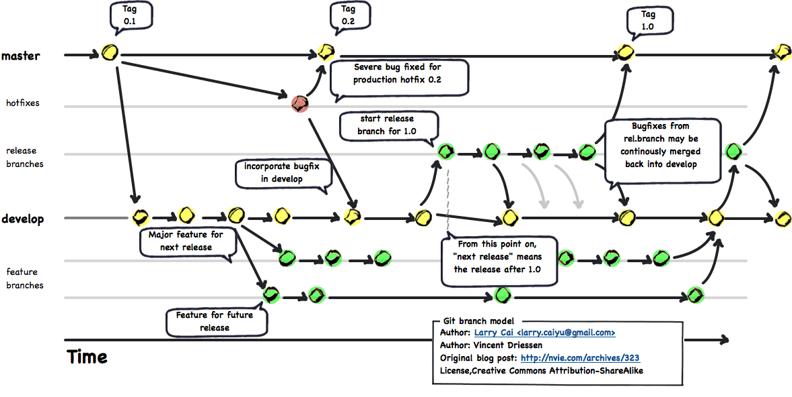
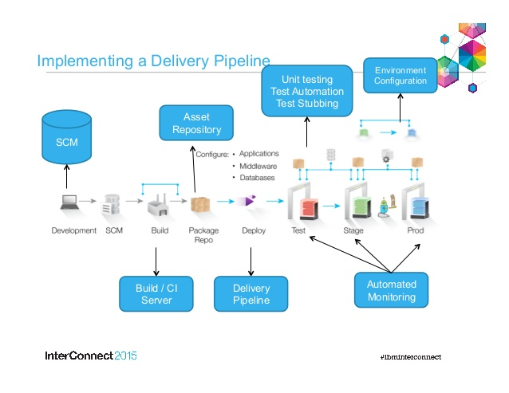

# Git Flow Presented by [Edward Delaporte](mailto:edward.delaporte@busey.com) for [Busey Bank](https://www.busey.com) This slide deck is online at http://edward.delaporte.us ??? - Why Git? - Why Git flow? Everybody is doing it. - Annecodate about the Git vs Mercurial poll. --- # What makes Git different? - Distributed - Works fine in local-only mode - Supports Branches - Merge actually works a lot of the time. --- # Sources of Confusion - To *Commit* creates a *Commit*. - Visual Studio frequently refuses instructions when there are *changes* that have not been turned into 'commits'. - This is because all Git operations act on *commits*, so Git is pretty useless around uncommitted changes. - All commits are reversible. ??? - Sometimes it is worthwhile to *commmit* unwanted changes and then revert the created *commit*, rather than trying to back them out. - Git assumes you know you can just revert your commit, and so sometimes expects you to do dumb things... --- # Understanding the Stage  ??? - The stage controls what goes in a commit. - Commits are created completely locally. - .git folder is where your commits actually are. - You can track and reverse your changes while offline, even check out other branches. --- # Git Commands <img src="git-flow-commands.png" width="100%" /> ??? --- # Git Flow  --- # Merge often  --- # Common Branch Names in Git Flow - feature (aka backlog) - master (aka production) - hotfix (aka bug fix) - develop (aka merge nightmare) - tags (aka where did I put that, anyway?) ??? - Explain purpose of each. - Git Flow is a technique that helps avoid breaking develop and master. - Your colleagues will only notice if you break develop or master. --- # Continuous Deployment Pipeline  # Developer Close-Up of Pipeline <img src="devpipeline.png" width="100%" /> --- # Resources - Code Academy https://www.codecademy.com/learn/learn-git